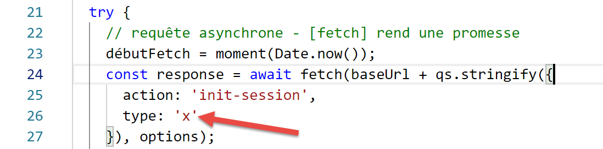

12. JavaScript HTTP 函数

12.1. 选择 HTTP 库
我们在此选择了两个库：
ECMAScript 6 原生提供了一个名为 [fetch] 的 HTTP 函数，但 [node.js] 尚未实现该函数（截至 2019 年 9 月）。 有一个名为 [node-fetch] 的库，它允许你在 Node 中使用 [fetch] 函数。该库使用了某些 [node.js] 特有的 API。因此，[node-fetch] 的代码可能无法 100% 移植到非 [node] 环境，例如浏览器；
此外，还有一个名为 [axios] 的库，专门用于处理 HTTP 请求，且同时兼容 [node.js] 和浏览器。这正是我们最终将要使用的库。
我们将展示使用这两个库编写的相同脚本，以说明其编码方法是相似的。
12.2. 搭建开发环境
12.2.1. 安装税费计算服务器
最终，我们将编写一个具有以下架构的 Web 应用程序：

JS：JavaScript
JavaScript 代码位于客户端：
- 来自提供静态页面或片段的服务；
- 一个 JSON 服务；
因此，该 JavaScript 代码是一个 JSON 客户端，因此可以像我们用 PHP 编写的 JSON 客户端一样，划分为 [UI、业务逻辑、DAO] 层（UI：用户界面）。
服务器将采用我们已编写过 13 个版本的税费计算服务器。我们将编写第 14 个版本。因此，我们首先在 NetBeans 中将 version 13 文件夹复制为 version 14 文件夹：

- 在 [6] 中，我们将第 14 版的 [config.json] 文件修改如下：
{
"databaseFilename": "Config/database.json",
"rootDirectory": "C:/myprograms/laragon-lite/www/php7/scripts-web/impots/version-14",
"relativeDependencies": [
"/Entities/BaseEntity.php",
"/Entities/Simulation.php",
...
"vues": {
"vue-authentification.php": [700, 221, 400],
"vue-calcul-impot.php": [200, 300, 341, 350, 800],
"vue-liste-simulations.php": [500, 600]
},
"vue-erreurs": "vue-erreurs.php"
}
- 在第 3 行，我们将应用程序的根目录更改为；
要访问此服务器，您必须启动 [Laragon] 服务。
完成上述操作后，我们可以使用 [Postman]（参见链接文章）来测试这个新版本的服务器——它目前与第 13 版完全相同。我们可以使用之前用于测试税费计算服务器第 12 版的请求集合：

- 在 [1-4] 中，使用 [init-session-700] 请求初始化一个 JSON 会话；
- 在 [4-5] 中，将 [version-12] 替换为 [version-14] 以测试该项目的第 14 版；
- 执行后，我们应从服务器收到 JSON 响应 [6]；
服务器第 14 版现已投入运行。我们需要对其进行一些微调。让我们回顾一下该服务器的 API：
操作 | 角色 | 执行上下文 |
init-session | 用于设置所需响应的类型（json、xml、html） | GET请求 main.php?action=init-session&type=x 可随时发送 |
authenticate-user | 授权或拒绝用户的登录 | POST 请求 main.php?action=authenticate-user 请求必须包含两个提交参数 [user, password] 仅当已知会话类型（json、xml、html）时才能发出 |
计算税款 | 执行税费计算模拟 | 向 main.php 发送 POST 请求，请求路径为 main.php?action=calculate-tax 请求必须包含三个提交参数 [married, children, salary] 仅当已知会话类型（json、xml、html）且用户已通过身份验证时才能发出 |
list-simulations | 请求查看自会话开始以来已执行的模拟列表 | GET 请求 main.php?action=list-simulations 该请求不接受任何其他参数 只有在已知会话类型（json、xml、html）且用户已通过身份验证的情况下才能发出 |
delete-simulation | 从模拟列表中删除一个模拟 | GET 请求 main.php?action=list-simulations&number=x 该请求不接受任何其他参数 仅在已知会话类型（json、xml、html）且用户已通过身份验证时才能发出 |
end-session | 结束模拟会话。 | 技术上，旧的 Web 会话将被删除，并创建一个新的会话 只有在已知会话类型（json、xml、html）且用户已通过身份验证的情况下才能发出 |
12.2.2. JavaScript 客户端 HTTP 库的安装
最初，我们将采用以下架构：

- 在 [1] 中，一个控制台脚本 [node.js] 向税费计算 JSON 服务器发起 HTTP 请求；
- 在[4]中，该脚本接收此响应并在控制台显示；
在示例 1 中，我们将使用 [node-fetch] 和 [axios] 库，随后在接下来的示例中仅保留 [axios]。现在，我们将通过 [VSCode] 终端安装这两个 JavaScript 库：

我们还将使用 [qs] 库，该库支持对字符串进行 URL 编码。请注意，这种编码方式用于对 HTTP GET 或 POST 请求的参数进行编码。

12.3. 脚本 [fetch-01]
[fetch-01] 脚本使用 [node-fetch] 库与税费计算服务器初始化一个 JSON 会话。其代码如下：
'use strict';
// imports
import fetch from 'node-fetch';
import qs from 'qs';
import { sprintf } from 'sprintf-js';
import moment from 'moment';
// URL base of tax calculation server
const baseUrl = 'http://localhost/php7/scripts-web/impots/version-14/main.php?';
// init session
async function initSession() {
// query options HHTP [get /main.php?action=init-session&type=json]
const options = {
method: "GET",
timeout: 2000
};
// execute query HTTP [get /main.php?action=init-session&type=json]
let débutFetch;
try {
// asynchronous request - [fetch] makes a promise
débutFetch = moment(Date.now());
const response = await fetch(baseUrl + qs.stringify({
action: 'init-session',
type: 'json'
}), options);
// [response] is the entire HTTP response from the server (HTTP headers + response itself)
// display this answer to see its structure
console.log(sprintf("réponse fetch formatée en json,=%j, %s", response, heure(débutFetch)));
console.log("réponse fetch en javascript=", response);
// you can have HTTP headers
console.log("entêtes de la réponse=", response.headers);
// if application/json response, the server's json response is obtained with the asynchronous function [response.json()]
// in which case the calling code obtains a [Promise] object
// [await] allows you to obtain the server's [json] response rather than its promise
const débutJson = moment(Date.now());
const objet = await response.json();
console.log(sprintf("réponse json=%j, type=%s, %s", objet, typeof (objet), heure(débutJson)));
return objet;
// if text / plain, the text response from the server is obtained with [response.text()]
// in which case the calling code obtains a [Promise] object
// [await] allows you to obtain the server's [text] response rather than its promise
// const text = await response.text();
// console.log("answer text=", text);
// return text;
} catch (error) {
// we're here because the server has sent an error code [404 Not Found, ...] accompanied by an empty body - we display the error to see its structure
// or because the [fetch] client has thrown an exception (network inaccessible, ...)
// the error structure is displayed
console.log(sprintf("error fetch en json=%j, %s", error, heure(débutFetch)));
console.log("error fetch en javascript=", typeof (error), error);
// launch the error message received
throw error.message;
}
}
// the main function executes the asynchronous function [initSession]
async function main() {
try {
console.log("requête HTTP vers le serveur en cours ---------------------------------------------");
const response = await initSession();
console.log("succès ---------------------------------------------");
console.log("réponse=", response, typeof (response))
} catch (error) {
console.log("erreur ---------------------------------------------");
console.log("erreur=", error, typeof (error));
}
}
// test
main();
// time and duration display utility
function heure(début) {
// current time
const now = moment(Date.now());
// time formatting
let result = "heure=" + now.format("HH:mm:ss:SSS");
// is it necessary to calculate a duration?
if (début) {
const durée = now - début;
const milliseconds = durée % 1000;
const seconds = Math.floor(durée / 1000);
// format time + duration
result = result + sprintf(", durée= %s seconde(s) et %s millisecondes", seconds, milliseconds);
}
// result
return result;
}
注释
- JavaScript 的 HTTP 函数是异步函数。这里，我们应用了上一节所学的内容（参见链接）；
- 第 24 行：为了等待异步函数 [fetch] 的响应在 [node.js] 事件循环中发布，我们使用关键字 [await]。我们知道，该语句必须位于以关键字 [async] 开头的代码块内（第 13 行）；
- 第 13–56 行：我们将 HTTP 代码封装在异步函数 [initSession] 中；
- 第 59–69 行：使用第二个异步函数 [main] 以阻塞方式（async/await）调用异步函数 [initSession]；
- 第 72 行：调用异步函数 [main]；
- 尽管整个代码看起来像同步代码，但这些确实是异步函数，只是以阻塞方式执行；
- 第 19 行：要与税费计算服务器初始化 JSON 会话，必须向其发送 HTTP 请求 [get /main.php?action=init-session&type=json]。第 24–27 行的代码正是执行此操作。 [fetch] 的语法如下： [fetch(URL, options)]，其中：
- [URL]：要查询的 URL；
- [options]：定义请求选项的对象。此处用于定义要发送给目标服务器的 HTTP 头部；
- 第 15–18 行：我们定义要发送的请求选项：
- [method]：我们希望执行 GET 请求；
- [timeout]：要求 [fetch] 客户端等待服务器响应的时间不超过 2 秒。若超时，[fetch] 将抛出异常；
- 第 24 行：为了获取 URL [/main.php?action=init-session&type=json]，我们使用 [qs] 库来获取 GET 请求中 URL 编码的参数 [action,type]。生成的字符串是 [init-session&type=json]，其实我们也可以自己构造这个字符串。我们只是想演示如何获取一个 URL 编码的字符串；
- 第 24 行：关键字 [await] 表示此处正在启动一个异步任务，且我们正在等待该任务在 [node.js] 事件循环中发布其响应；
- 第 24 行：在 [response] 中，我们获取了一个描述整个接收到的 HTTP 响应（包括头部和正文）的复杂对象；
- 第 30–31 行：我们打印 [response] 对象以查看其结构，先以字符串形式显示，再以 JavaScript 对象形式显示；
- 第 33 行：我们显示服务器发送的 HTTP 头部；
- 第 38 行：我们知道税费计算服务器将发送一个 JSON 字符串。该字符串封装在 [response] 对象中。我们可以使用 [response.json()] 方法获取它。但是，该方法是异步的。 因此，我们编写 [await response.json()] 来获取该 JSON 字符串，该字符串将在 [node.js] 事件循环中发布。实际上，我们获得的并非 JSON 字符串本身，而是由其表示的 JavaScript 对象；
- 第 39 行：显示接收到的 JSON 字符串；
- 第 40 行：返回接收到的 JavaScript 对象；
- 第 47 行：捕获 [fetch] 语句可能引发的任何错误。该语句仅在 HTTP 操作失败且未收到服务器响应时才会抛出异常。如果收到了响应（即使 HTTP 状态码不是 [200 OK]），[fetch] 也不会抛出异常，此时服务器响应可在第 38 行获取；
- 第 51–52 行：显示 [catch] 子句接收到的 [error] 对象，先以 JSON 字符串形式显示，然后以 JavaScript 对象形式显示；
- 第 54 行：来自 [fetch] 的错误消息存储在 [error.message] 中；
- 第 59–69 行：异步函数 [main] 以阻塞方式调用异步函数 [initSession]（第 62 行中的 await）；
- 第 72 行：启动异步函数 [main]，随后主脚本代码执行完毕。当启动的异步任务将其结果发布到事件循环后，整个脚本即告完成；
执行结果如下：
情况 1：Laragon 服务器未运行
[Running] C:\myprograms\laragon-lite\bin\nodejs\node-v10\node.exe -r esm "c:\Data\st-2019\dev\es6\javascript\http\fetch-01.js"
requête HTTP vers le serveur en cours ---------------------------------------------
error fetch en json={"message":"network timeout at: http://localhost/php7/scripts-web/impots/version-14/main.php?action=init-session&type=json","type":"request-timeout"}, heure=10:08:48:180, durée= 2 seconde(s) et 62 millisecondes
error fetch en javascript= object { FetchError: network timeout at: http://localhost/php7/scripts-web/impots/version-14/main.php?action=init-session&type=json
at Timeout.<anonymous> (c:\Data\st-2019\dev\es6\javascript\node_modules\node-fetch\lib\index.js:1448:13)
at ontimeout (timers.js:436:11)
at tryOnTimeout (timers.js:300:5)
at listOnTimeout (timers.js:263:5)
at Timer.processTimers (timers.js:223:10)
message:
'network timeout at: http://localhost/php7/scripts-web/impots/version-14/main.php?action=init-session&type=json',
type: 'request-timeout' }
erreur ---------------------------------------------
erreur= network timeout at: http://localhost/php7/scripts-web/impots/version-14/main.php?action=init-session&type=json string
[Done] exited with code=0 in 2.804 seconds
注释
- 第 3 行：由于 HTTP 请求设置了 2 秒超时，该请求在 2 秒 62 毫秒后失败；
- 第 4–9 行：由 [catch(error)] 子句捕获的 JavaScript [error] 对象。该对象具有两个属性：
- [FetchError]：第 4 行；
- [message]：第 10–12 行；
- 第 14 行：异步函数 [main] 接收到的错误消息；
情况 2：Laragon 服务器正在运行
[Running] C:\myprograms\laragon-lite\bin\nodejs\node-v10\node.exe -r esm "c:\Data\st-2019\dev\es6\javascript\http\fetch-01.js"
requête HTTP vers le serveur en cours ---------------------------------------------
réponse fetch formatée en json,={"size":0,"timeout":2000}, heure=10:13:50:814, durée= 0 seconde(s) et 375 millisecondes
réponse fetch en javascript= Response {
size: 0,
timeout: 2000,
[Symbol(Body internals)]:
{ body:
PassThrough {
_readableState: [ReadableState],
readable: true,
domain: null,
_events: [Object],
_eventsCount: 2,
_maxListeners: undefined,
_writableState: [WritableState],
writable: false,
allowHalfOpen: true,
_transformState: [Object] },
disturbed: false,
error: null },
[Symbol(Response internals)]:
{ url:
'http://localhost/php7/scripts-web/impots/version-14/main.php?action=init-session&type=json',
status: 200,
statusText: 'OK',
headers: Headers { [Symbol(map)]: [Object] },
counter: 0 } }
entêtes de la réponse= Headers {
[Symbol(map)]:
[Object: null prototype] {
date: [ 'Sat, 14 Sep 2019 08:13:50 GMT' ],
server: [ 'Apache/2.4.35 (Win64) OpenSSL/1.1.0i PHP/7.2.11' ],
'x-powered-by': [ 'PHP/7.2.11' ],
'cache-control': [ 'max-age=0, private, must-revalidate, no-cache, private' ],
'set-cookie': [ 'PHPSESSID=99q2iinusmhl55fa600aie2mmu; path=/' ],
'content-length': [ '86' ],
connection: [ 'close' ],
'content-type': [ 'application/json' ] } }
réponse json={"action":"init-session","état":700,"réponse":"session démarrée avec type [json]"}, type=object, heure=10:13:50:825, durée= 0 seconde(s) et 1 millisecondes
succès ---------------------------------------------
réponse= { action: 'init-session',
'état': 700,
'réponse': 'session démarrée avec type [json]' } object
[Done] exited with code=0 in 1.022 seconds
评论
- 第 3 行：[fetch] 在 375 毫秒后收到服务器响应；
- 第 4–39 行：封装服务器响应的 JavaScript 对象 [response] 的结构。在其属性中，有些可能值得我们关注：
- [status]（第 25 行）：服务器响应的 HTTP 状态码；
- [statusText]（第 26 行）：与该状态码关联的文本；
- [headers]（第 27 行）：服务器响应的 HTTP 头部；
- [body]（第 8 行）：表示服务器发送的文档。[fetch] 语句提供了用于处理它的方法；
- 第 29–39 行：服务器响应的 HTTP 头部；
- 第 40 行：异步函数 [response.json()] 在 1 毫秒后返回了响应；
- 第 42–44 行：异步函数 [main] 接收到的 JavaScript 对象；
情况 3：Laragon 服务器正在运行，但向其发送了错误的命令：

- 上文第 26 行，向服务器传递了错误的会话类型；
执行结果如下：
requête HTTP vers le serveur en cours ---------------------------------------------
réponse fetch formatée en json,={"size":0,"timeout":2000}, heure=10:27:54:114, durée= 0 seconde(s) et 136 millisecondes
réponse fetch en javascript= Response {
size: 0,
timeout: 2000,
[Symbol(Body internals)]:
{ body:
PassThrough {
_readableState: [ReadableState],
readable: true,
domain: null,
_events: [Object],
_eventsCount: 2,
_maxListeners: undefined,
_writableState: [WritableState],
writable: false,
allowHalfOpen: true,
_transformState: [Object] },
disturbed: false,
error: null },
[Symbol(Response internals)]:
{ url:
'http://localhost/php7/scripts-web/impots/version-14/main.php?action=init-session&type=x',
status: 400,
statusText: 'Bad Request',
headers: Headers { [Symbol(map)]: [Object] },
counter: 0 } }
entêtes de la réponse= Headers {
[Symbol(map)]:
[Object: null prototype] {
date: [ 'Sat, 14 Sep 2019 08:27:54 GMT' ],
server: [ 'Apache/2.4.35 (Win64) OpenSSL/1.1.0i PHP/7.2.11' ],
'x-powered-by': [ 'PHP/7.2.11' ],
'cache-control': [ 'max-age=0, private, must-revalidate, no-cache, private' ],
'set-cookie': [ 'PHPSESSID=5ku9gfok81ikj98hia0meeum57; path=/' ],
'content-length': [ '79' ],
connection: [ 'close' ],
'content-type': [ 'application/json' ] } }
réponse json={"action":"init-session","état":703,"réponse":"paramètre type=[x] invalide"}, type=object, heure=10:27:54:127, durée= 0 seconde(s) et 2 millisecondes
succès ---------------------------------------------
réponse= { action: 'init-session',
'état': 703,
'réponse': 'paramètre type=[x] invalide' } object
[Done] exited with code=0 in 0.712 seconds
- 服务器响应在第 2 行接收；
- 第 24 行：我们可以看到服务器响应的 HTTP 状态码为 400，这是一个错误码。然而，[fetch] 并未抛出异常。只要 [fetch] 接收到服务器的响应，它就会进行处理，而不会抛出异常；
- 第 41–43 行：异步函数 [main] 获取的响应；
12.4. 脚本 [fetch-02]
以下脚本复用了 [fetch-01] 脚本，同时去除了所有不必要的细节：
'use strict';
// imports
import fetch from 'node-fetch';
import qs from 'qs';
// URL base of tax calculation server
const baseUrl = 'http://localhost/php7/scripts-web/impots/version-14/main.php?';
// init session
async function initSession() {
// query options HHTP [get /main.php?action=init-session&type=json]
const options = {
method: "GET",
timeout: 2000
};
// execute query HTTP [get /main.php?action=init-session&type=json]
const response = await fetch(baseUrl + qs.stringify({
action: 'init-session',
type: 'json'
}), options);
// result received in jSON
return await response.json();
}
// the main function executes the asynchronous function [initSession]
async function main() {
try {
console.log("requête HTTP vers le serveur en cours ---------------------------------------------");
const response = await initSession();
console.log("succès ---------------------------------------------");
console.log("réponse=", response)
} catch (error) {
console.log("erreur ---------------------------------------------");
console.log("erreur=", error.message);
}
}
// test
main();
正常执行的结果：
[Running] C:\myprograms\laragon-lite\bin\nodejs\node-v10\node.exe -r esm "c:\Data\st-2019\dev\es6\javascript\http\fetch-02.js"
requête HTTP vers le serveur en cours ---------------------------------------------
succès ---------------------------------------------
réponse= { action: 'init-session',
'état': 700,
'réponse': 'session démarrée avec type [json]' }
[Done] exited with code=0 in 0.56 seconds
发生异常的执行结果（停止 Laragon 服务器）：
[Running] C:\myprograms\laragon-lite\bin\nodejs\node-v10\node.exe -r esm "c:\Data\st-2019\dev\es6\javascript\http\fetch-02.js"
requête HTTP vers le serveur en cours ---------------------------------------------
erreur ---------------------------------------------
erreur= network timeout at: http://localhost/php7/scripts-web/impots/version-14/main.php?action=init-session&type=json
[Done] exited with code=0 in 2.701 seconds
12.5. 脚本 [axios-01]
在此，我们将重新审视 [fetch-01] 脚本，并使用 [axios] 库对其进行重写。需要提醒的是，我们之所以关注该库，是因为它能在 [node.js] 环境和常见浏览器之间实现跨平台兼容。这使得我们可以：
- 在第一阶段，在 [Node.js] 环境中测试脚本；
- 在第二阶段，将其移植到浏览器中；
[axios-01] 脚本遵循了 [fetch-01] 脚本的结构：
'use strict';
import axios from 'axios';
// axios default configuration
axios.defaults.timeout = 2000;
axios.defaults.baseURL = 'http://localhost/php7/scripts-web/impots/version-14';
// init session
async function initSession(axios) {
// query options HHTP [get /main.php?action=init-session&type=json]
const options = {
method: "GET",
// URL parameters
params: {
action: 'init-session',
type: 'json'
}
};
// execute query HTTP [get /main.php?action=init-session&type=json]
try {
// asynchronous request
const response = await axios.request('main.php', options);
// response is the entire HTTP response from the server (HTTP headers + response itself)
// display this answer to see its structure
console.log("réponse axios=", response);
// the server response is in [response.data]
return response.data;
} catch (error) {
// we're here because the server has sent an error code [404 Not Found, 500 Internal Server Error, ...]
// the [error] parameter is an exception instance - it can take various forms
// display it to see its structure
console.log("axios error=", typeof (error), error);
if (error.response) {
// the server reported an error in status HTTP but also sent a response
// then it is found in [error.response.data]
// we know that the server sends jSON responses with structure {action, status, response}
// and that in the event of an error, the error msg is in [reply]
return error.response.data;
} else {
// we launch the error
throw error;
}
}
}
// the main function executes the asynchronous function [initSession]
async function main() {
try {
console.log("requête HTTP vers le serveur en cours ---------------------------------------------");
const response = await initSession(axios);
console.log("succès ---------------------------------------------");
console.log("réponse=", response, typeof (response))
} catch (error) {
console.log("erreur ---------------------------------------------");
console.log("erreur=", error.message);
}
}
// test
main();
注释
- 第 2 行：我们导入了 [axios] 库；
- 第 5-6 行：HTTP 请求的默认配置。[axios.defaults] 选项适用于 [axios] 对象发送的所有 HTTP 请求，无需为每个新请求单独指定；
- 第 5 行：所有请求的超时时间为 2 秒；
- 第 6 行：所有 URL 均相对于基础 URL；
- 第 9 行：异步 [initSession] 函数；
- 第 11–18 行：待发送的 HTTP 请求的选项（除第 5–6 行已定义的默认选项外）；
- 第 14–17 行：URL 参数 [action=init-session&type=json]。[params] 对象将自动转换为 URL 编码字符串；
- 第 22 行：对异步函数 [axios.request] 的阻塞调用。第一个参数是目标 URL，由第 6 行定义的基准 URL 后接 [main.php] 构成。第二个参数是第 11–18 行中的 [options] 对象；
- 第 25 行：[response] 是一个 JavaScript 对象，封装了来自服务器的完整 HTTP 响应（HTTP 头部 + 响应正文）。我们将其显示出来以查看其 JavaScript 结构；
- 第 27 行：如果服务器发送了文档，则可在 [response.data] 中找到。这里我们知道服务器发送的 JSON 响应附带了 HTTP 头部 [Content-type: application/json]。该头部的存在会导致 [axios] 自动将 [response.data] 反序列化为 JavaScript 对象；
- 第 28 行：[axios] 函数可能抛出异常。这是 [axios] 与 [fetch] 的区别所在。在以下情况下会抛出异常：
- 无法发送 HTTP 请求（客户端错误）；
- 服务器返回了 HTTP 错误代码（400、404、500 等）（此行为实际上是可配置的）。请注意，如果该 HTTP 状态码附带响应数据，[fetch] 不会抛出异常，而 [axios] 会。但是，如果 HTTP 错误代码附带文档，该文档会被存放在 [error.response] 中；
- 第 32 行：我们展示了 [error] 对象的 JavaScript 结构；
- 第 33–38 行：如果 [error] 对象包含一个 [response] 对象，则将此响应返回给调用代码；
- 第 39–42 行：在所有其他情况下，将 [error] 对象传递回调用代码；
- 第 47–57 行：异步函数 [main]；
- 第 50 行：对异步函数 [initSession] 的阻塞调用。从服务器获取的 JSON 响应被作为 JavaScript 对象返回；
- 第 53–56 行：处理任何错误。错误消息存储在 [error.message] 中；
执行结果如下：
情况 1：Laragon 服务器未运行
[Running] C:\myprograms\laragon-lite\bin\nodejs\node-v10\node.exe -r esm "c:\Data\st-2019\dev\es6\javascript\http\axios-01.js"
requête HTTP vers le serveur en cours ---------------------------------------------
axios error= object { Error: timeout of 2000ms exceeded
at createError (c:\Data\st-2019\dev\es6\javascript\node_modules\axios\lib\core\createError.js:16:15)
at Timeout.handleRequestTimeout (c:\Data\st-2019\dev\es6\javascript\node_modules\axios\lib\adapters\http.js:252:16)
at ontimeout (timers.js:436:11)
at tryOnTimeout (timers.js:300:5)
at listOnTimeout (timers.js:263:5)
at Timer.processTimers (timers.js:223:10)
config:
{ url:
'http://localhost/php7/scripts-web/impots/version-14/main.php',
method: 'get',
params: { action: 'init-session', type: 'json' },
headers:
{ Accept: 'application/json, text/plain, */*',
'User-Agent': 'axios/0.19.0' },
baseURL: 'http://localhost/php7/scripts-web/impots/version-14',
transformRequest: [ [Function: transformRequest] ],
transformResponse: [ [Function: transformResponse] ],
timeout: 2000,
adapter: [Function: httpAdapter],
xsrfCookieName: 'XSRF-TOKEN',
xsrfHeaderName: 'X-XSRF-TOKEN',
maxContentLength: -1,
validateStatus: [Function: validateStatus],
data: undefined },
code: 'ECONNABORTED',
request:
Writable {
_writableState:
WritableState {
objectMode: false,
highWaterMark: 16384,
finalCalled: false,
needDrain: false,
ending: false,
ended: false,
finished: false,
destroyed: false,
decodeStrings: true,
defaultEncoding: 'utf8',
length: 0,
writing: false,
corked: 0,
sync: true,
bufferProcessing: false,
onwrite: [Function: bound onwrite],
writecb: null,
writelen: 0,
bufferedRequest: null,
lastBufferedRequest: null,
pendingcb: 0,
prefinished: false,
errorEmitted: false,
emitClose: true,
bufferedRequestCount: 0,
corkedRequestsFree: [Object] },
writable: true,
domain: null,
_events:
[Object: null prototype] {
response: [Function: handleResponse],
error: [Function: handleRequestError] },
_eventsCount: 2,
_maxListeners: undefined,
_options:
{ protocol: 'http:',
maxRedirects: 21,
maxBodyLength: 10485760,
path:
'/php7/scripts-web/impots/version-14/main.php?action=init-session&type=json',
method: 'GET',
headers: [Object],
agent: undefined,
auth: undefined,
hostname: 'localhost',
port: null,
nativeProtocols: [Object],
pathname: '/php7/scripts-web/impots/version-14/main.php',
search: '?action=init-session&type=json' },
_redirectCount: 0,
_redirects: [],
_requestBodyLength: 0,
_requestBodyBuffers: [],
_onNativeResponse: [Function],
_currentRequest:
ClientRequest {
domain: null,
_events: [Object],
_eventsCount: 6,
_maxListeners: undefined,
output: [],
outputEncodings: [],
outputCallbacks: [],
outputSize: 0,
writable: true,
_last: true,
chunkedEncoding: false,
shouldKeepAlive: false,
useChunkedEncodingByDefault: false,
sendDate: false,
_removedConnection: false,
_removedContLen: false,
_removedTE: false,
_contentLength: 0,
_hasBody: true,
_trailer: '',
finished: true,
_headerSent: true,
socket: [Socket],
connection: [Socket],
_header:
'GET /php7/scripts-web/impots/version-14/main.php?action=init-session&type=json HTTP/1.1\r\nAccept: application/json, text/plain, */*\r\nUser-Agent: axios/0.19.0\r\nHost: localhost\r\nConnection: close\r\n\r\n',
_onPendingData: [Function: noopPendingOutput],
agent: [Agent],
socketPath: undefined,
timeout: undefined,
method: 'GET',
path:
'/php7/scripts-web/impots/version-14/main.php?action=init-session&type=json',
_ended: false,
res: null,
aborted: 1568528450762,
timeoutCb: null,
upgradeOrConnect: false,
parser: [HTTPParser],
maxHeadersCount: null,
_redirectable: [Circular],
[Symbol(isCorked)]: false,
[Symbol(outHeadersKey)]: [Object] },
_currentUrl:
'http://localhost/php7/scripts-web/impots/version-14/main.php?action=init-session&type=json' },
response: undefined,
isAxiosError: true,
toJSON: [Function] }
erreur ---------------------------------------------
erreur= timeout of 2000ms exceeded
[Done] exited with code=0 in 2.784 seconds
评论
- 第 33-136 行：[error] 对象包含大量信息；
- [Error]，第 3-9 行：对所发生错误的描述；
- [config]，第 10–27 行：导致此错误的 HTTP 请求配置；
- [config.url]，第 11–12 行：目标 URL；
- [config.method]，第 13 行：请求方法；
- [config.params]，第 14 行：URL 参数；
- [config.headers]，第 16–17 行：请求的 HTTP 头部；
- [config.baseURL]，第 18 行：目标 URL 的基准 URL；
- [config.timeout]，第 21 行：请求超时；
- [code]，第 28 行：错误代码；
- [request]，第 29–133 行：HTTP 请求的详细描述。请注意，大多数属性名前缀为下划线 (_)，这表示它们是 [request] 对象的内部属性，不供开发人员直接使用；
- [response]，第 134 行：服务器响应，此处为空；
- 第 138 行：由 [main] 函数显示的错误消息；
情况 2：Laragon 服务器正在运行
[Running] C:\myprograms\laragon-lite\bin\nodejs\node-v10\node.exe -r esm "c:\Data\st-2019\dev\es6\javascript\http\axios-01.js"
requête HTTP vers le serveur en cours ---------------------------------------------
réponse axios= { status: 200,
statusText: 'OK',
headers:
{ date: 'Sun, 15 Sep 2019 07:09:26 GMT',
server: 'Apache/2.4.35 (Win64) OpenSSL/1.1.0i PHP/7.2.11',
'x-powered-by': 'PHP/7.2.11',
'cache-control': 'max-age=0, private, must-revalidate, no-cache, private',
'set-cookie': [ 'PHPSESSID=uas6lugtblstktcifpd8e5irm6; path=/' ],
'content-length': '86',
connection: 'close',
'content-type': 'application/json' },
config:
{ url:
'http://localhost/php7/scripts-web/impots/version-14/main.php',
method: 'get',
params: { action: 'init-session', type: 'json' },
headers:
{ Accept: 'application/json, text/plain, */*',
'User-Agent': 'axios/0.19.0' },
baseURL: 'http://localhost/php7/scripts-web/impots/version-14',
transformRequest: [ [Function: transformRequest] ],
transformResponse: [ [Function: transformResponse] ],
timeout: 2000,
adapter: [Function: httpAdapter],
xsrfCookieName: 'XSRF-TOKEN',
xsrfHeaderName: 'X-XSRF-TOKEN',
maxContentLength: -1,
validateStatus: [Function: validateStatus],
data: undefined },
request:
ClientRequest {
domain: null,
_events:
[Object: null prototype] {
socket: [Function],
abort: [Function],
aborted: [Function],
error: [Function],
timeout: [Function],
prefinish: [Function: requestOnPrefinish] },
_eventsCount: 6,
_maxListeners: undefined,
output: [],
outputEncodings: [],
outputCallbacks: [],
outputSize: 0,
writable: true,
_last: true,
chunkedEncoding: false,
shouldKeepAlive: false,
useChunkedEncodingByDefault: false,
sendDate: false,
_removedConnection: false,
_removedContLen: false,
_removedTE: false,
_contentLength: 0,
_hasBody: true,
_trailer: '',
finished: true,
_headerSent: true,
socket:
Socket {
connecting: false,
_hadError: false,
_handle: [TCP],
_parent: null,
_host: 'localhost',
_readableState: [ReadableState],
readable: true,
domain: null,
_events: [Object],
_eventsCount: 7,
_maxListeners: undefined,
_writableState: [WritableState],
writable: false,
allowHalfOpen: false,
_sockname: null,
_pendingData: null,
_pendingEncoding: '',
server: null,
_server: null,
parser: null,
_httpMessage: [Circular],
[Symbol(asyncId)]: 6,
[Symbol(lastWriteQueueSize)]: 0,
[Symbol(timeout)]: null,
[Symbol(kBytesRead)]: 0,
[Symbol(kBytesWritten)]: 0 },
connection:
Socket {
connecting: false,
_hadError: false,
_handle: [TCP],
_parent: null,
_host: 'localhost',
_readableState: [ReadableState],
readable: true,
domain: null,
_events: [Object],
_eventsCount: 7,
_maxListeners: undefined,
_writableState: [WritableState],
writable: false,
allowHalfOpen: false,
_sockname: null,
_pendingData: null,
_pendingEncoding: '',
server: null,
_server: null,
parser: null,
_httpMessage: [Circular],
[Symbol(asyncId)]: 6,
[Symbol(lastWriteQueueSize)]: 0,
[Symbol(timeout)]: null,
[Symbol(kBytesRead)]: 0,
[Symbol(kBytesWritten)]: 0 },
_header:
'GET /php7/scripts-web/impots/version-14/main.php?action=init-session&type=json HTTP/1.1\r\nAccept: application/json, text/plain, */*\r\nUser-Agent: axios/0.19.0\r\nHost: localhost\r\nConnection: close\r\n\r\n',
_onPendingData: [Function: noopPendingOutput],
agent:
Agent {
domain: null,
_events: [Object],
_eventsCount: 1,
_maxListeners: undefined,
defaultPort: 80,
protocol: 'http:',
options: [Object],
requests: {},
sockets: [Object],
freeSockets: {},
keepAliveMsecs: 1000,
keepAlive: false,
maxSockets: Infinity,
maxFreeSockets: 256 },
socketPath: undefined,
timeout: undefined,
method: 'GET',
path:
'/php7/scripts-web/impots/version-14/main.php?action=init-session&type=json',
_ended: true,
res:
IncomingMessage {
_readableState: [ReadableState],
readable: false,
domain: null,
_events: [Object],
_eventsCount: 3,
_maxListeners: undefined,
socket: [Socket],
connection: [Socket],
httpVersionMajor: 1,
httpVersionMinor: 0,
httpVersion: '1.0',
complete: true,
headers: [Object],
rawHeaders: [Array],
trailers: {},
rawTrailers: [],
aborted: false,
upgrade: false,
url: '',
method: null,
statusCode: 200,
statusMessage: 'OK',
client: [Socket],
_consuming: false,
_dumped: false,
req: [Circular],
responseUrl:
'http://localhost/php7/scripts-web/impots/version-14/main.php?action=init-session&type=json',
redirects: [] },
aborted: undefined,
timeoutCb: null,
upgradeOrConnect: false,
parser: null,
maxHeadersCount: null,
_redirectable:
Writable {
_writableState: [WritableState],
writable: true,
domain: null,
_events: [Object],
_eventsCount: 2,
_maxListeners: undefined,
_options: [Object],
_redirectCount: 0,
_redirects: [],
_requestBodyLength: 0,
_requestBodyBuffers: [],
_onNativeResponse: [Function],
_currentRequest: [Circular],
_currentUrl:
'http://localhost/php7/scripts-web/impots/version-14/main.php?action=init-session&type=json' },
[Symbol(isCorked)]: false,
[Symbol(outHeadersKey)]:
[Object: null prototype] { accept: [Array], 'user-agent': [Array], host: [Array] } },
data:
{ action: 'init-session',
'état': 700,
'réponse': 'session démarrée avec type [json]' } }
succès ---------------------------------------------
réponse= { action: 'init-session',
'état': 700,
'réponse': 'session démarrée avec type [json]' } object
[Done] exited with code=0 in 1.115 seconds
评论
- 第 3–203 行：封装服务器 HTTP 响应的 JavaScript 对象 [response]；
- 第 3 行，[status]：响应的 HTTP 状态码；
- 第 4 行，[statusText]：与前面的 HTTP 状态码关联的文本；
- 第 5–13 行，[headers]：响应的 HTTP 头部：
- 第 10 行，[Set-Cookie]：会话 Cookie；
- 第 13 行，[Content-Type]：服务器发送的文档类型；
- 第 14–31 行，[config]：发送的 HTTP 请求的配置；
- 第 32–199 行，[request]：详细描述所发送 HTTP 请求的 JavaScript 对象；
- 第 200–203 行，[request.data]：封装服务器 JSON 响应的 JavaScript 对象；
- 第 205–207 行：由异步函数 [main] 获取的响应；
情况 3：向 Laragon 服务器发送了错误的 [init-session] 请求；

执行结果如下：
[Running] C:\myprograms\laragon-lite\bin\nodejs\node-v10\node.exe -r esm "c:\Data\st-2019\dev\es6\javascript\http\axios-01.js"
requête HTTP vers le serveur en cours ---------------------------------------------
axios error= object { Error: Request failed with status code 400
...
config:
{ url:
'http://localhost/php7/scripts-web/impots/version-14/main.php',
...
data: undefined },
request:
...
[Symbol(outHeadersKey)]:
[Object: null prototype] { accept: [Array], 'user-agent': [Array], host: [Array] } },
response:
{ status: 400,
statusText: 'Bad Request',
headers:
{ date: 'Sun, 15 Sep 2019 07:25:58 GMT',
server: 'Apache/2.4.35 (Win64) OpenSSL/1.1.0i PHP/7.2.11',
'x-powered-by': 'PHP/7.2.11',
'cache-control': 'max-age=0, private, must-revalidate, no-cache, private',
'set-cookie': [Array],
'content-length': '79',
connection: 'close',
'content-type': 'application/json' },
config:
{ url:
'http://localhost/php7/scripts-web/impots/version-14/main.php',
...
data: undefined },
request:
...
[Symbol(outHeadersKey)]: [Object] },
data:
{ action: 'init-session',
'état': 703,
'réponse': 'paramètre type=[x] invalide' } },
isAxiosError: true,
toJSON: [Function] }
succès ---------------------------------------------
réponse= { action: 'init-session',
'état': 703,
'réponse': 'paramètre type=[x] invalide' } object
[Done] exited with code=0 in 0.69 seconds
由于服务器返回了 HTTP 400 状态码（第 15 行），[axios] 抛出了异常（同样，此行为可通过配置调整）。尽管 [axios] 抛出了异常，我们仍可在 [error.response]（第 14 行）中获取来自服务器的 HTTP 响应，并在 [error.response.data]（第 34 行）中获取发送的 JSON 文档。 第 41–43 行：[main] 函数正确地从服务器获取了 JSON 响应。
12.6. 脚本 [axios-02]
既然我们已经详细介绍了 [axios] 库在 HTTP 请求过程中处理的对象，现在可以将 [axios-01] 脚本重写为如下形式：
'use strict';
import axios from 'axios';
// axios default configuration
axios.defaults.timeout = 2000;
axios.defaults.baseURL = 'http://localhost/php7/scripts-web/impots/version-14';
// init session
async function initSession(axios) {
// query options HHTP [get /main.php?action=init-session&type=json]
const options = {
method: "GET",
// URL parameters
params: {
action: 'init-session',
type: 'json'
}
};
try {
// execute query HTTP [get /main.php?action=init-session&type=json]
const response = await axios.request('main.php', options);
// the server response is in [response.data]
return response.data;
} catch (error) {
// server response
if (error.response) {
// the answer jSON is in [error.response.data]
return error.response.data;
} else {
// error restart
throw error;
}
}
}
// the main function executes the asynchronous function [initSession]
async function main() {
try {
console.log("requête HTTP vers le serveur en cours ---------------------------------------------");
const response = await initSession(axios);
console.log("succès ---------------------------------------------");
console.log("réponse=", response, typeof (response))
} catch (error) {
console.log("erreur ---------------------------------------------");
console.log("erreur=", error.message);
}
}
// test
main();
12.7. 脚本 [axios-03]
[axios-03] 脚本采用与 [axios-02] 脚本相同的方法。这次，我们向服务器添加了 [authenticate-user] HTTP 请求，该请求使用 POST 方法发送：
'use strict';
import axios from 'axios';
import qs from 'qs'
// axios configuration
axios.defaults.timeout = 2000;
axios.defaults.baseURL = 'http://localhost/php7/scripts-web/impots/version-14';
// init session
async function initSession(axios) {
// query options HHTP [get /main.php?action=init-session&type=json]
const options = {
method: "GET",
// URL parameters
params: {
action: 'init-session',
type: 'json'
}
};
try {
// execute query HTTP [get /main.php?action=init-session&type=json]
const response = await axios.request('main.php', options);
// the server response is in [response.data]
return response.data;
} catch (error) {
// server response
if (error.response) {
// the answer jSON is in [error.response.data]
return error.response.data;
} else {
// error restart
throw error;
}
}
}
async function authentifierUtilisateur(axios, user, password) {
// query options HHTP [POST /main.php?action=authenticate-user]
const options = {
method: "POST",
headers: {
'Content-type': 'application/x-www-form-urlencoded',
},
// body of POST
data: qs.stringify({
user: user,
password: password
}),
// URL parameters
params: {
action: 'authentifier-utilisateur'
}
};
try {
// execute query HTTP [post /main.php?action=authenticate-user]
const response = await axios.request('main.php', options);
// the server response is in [response.data]
return response.data;
} catch (error) {
// server response
if (error.response) {
// the answer jSON is in [error.response.data]
return error.response.data;
} else {
// error restart
throw error;
}
}
}
// the main function executes asynchronous functions one by one
async function main() {
try {
// init-session
console.log("action init-session en cours ---------------------------------------------");
const response1 = await initSession(axios);
console.log("succès ---------------------------------------------");
console.log("réponse=", response1);
// authenticate-user
console.log("action authentifier-utilisateur en cours ---------------------------------------------");
const response2 = await authentifierUtilisateur(axios, 'admin', 'admin');
console.log("succès ---------------------------------------------");
console.log("réponse=", response2)
} catch (error) {
console.log("erreur ---------------------------------------------");
console.log("erreur=", error);
}
}
// test
main();
注释
- 第 38-70 行：异步函数 [authenticateUser]；
- 第 39 行：必须发出 [POST /main.php?action=authenticate-user] 请求；
- 第 40–54 行：HTTP 请求选项；
- 第 41 行：这是一个 POST 请求；
- 第 42–44 行：POST 参数将通过 URL 编码封装在客户端随请求发送的文档中；
- 第 46–49 行：[data] 属性必须包含 URL 编码后的 POST 字符串。为此，我们使用第 3 行导入的 [qs] 库；
- 第 55–69 行：为执行请求，我们使用与 [initSession] 方法中相同的代码；
- 第 73–89 行：[asynchrone] 方法以阻塞方式依次调用 [initSession] 和 [authentifierUtilisateur] 方法（第 77 行和第 82 行）；
- 第 82 行：使用 (admin, admin) 作为登录凭据。我们知道服务器会识别这些凭据；
执行结果如下：
[Running] C:\myprograms\laragon-lite\bin\nodejs\node-v10\node.exe -r esm "c:\Data\st-2019\dev\es6\javascript\http\axios-03.js"
action init-session en cours ---------------------------------------------
succès ---------------------------------------------
réponse= { action: 'init-session',
'état': 700,
'réponse': 'session démarrée avec type [json]' }
action authentifier-utilisateur en cours ---------------------------------------------
succès ---------------------------------------------
réponse= { action: 'authentifier-utilisateur',
'état': 103,
'réponse':
[ 'pas de session en cours. Commencer par action [init-session]' ] }
[Done] exited with code=0 in 0.834 seconds
- 第 9-12 行：用户认证失败：服务器未保留已初始化 JSON 会话的事实。这是因为对第一个 [init-session] 请求的响应中未发送会话 Cookie；
12.8. 脚本 [axios-04]
[axios-04]脚本对[axios-03]脚本进行了两项改进：
- 它处理了会话 Cookie；
- 将 [initSession] 和 [authenticateUser] 函数中的公共部分提取到 [getRemoteData] 函数中；
'use strict';
import axios from 'axios';
import qs from 'qs'
// axios configuration
axios.defaults.timeout = 2000;
axios.defaults.baseURL = 'http://localhost/php7/scripts-web/impots/version-14';
// session cookie
const sessionCookieName = "PHPSESSID";
let sessionCookie = '';
// init session
async function initSession(axios) {
// query options HHTP [get /main.php?action=init-session&type=json]
const options = {
method: "GET",
// URL parameters
params: {
action: 'init-session',
type: 'json'
}
};
// execute query HTTP
return await getRemoteData(axios, options);
}
async function authentifierUtilisateur(axios, user, password) {
// query options HHTP [post /main.php?action=authenticate-user]
const options = {
method: "POST",
headers: {
'Content-type': 'application/x-www-form-urlencoded',
},
// body of POST
data: qs.stringify({
user: user,
password: password
}),
// URL parameters
params: {
action: 'authentifier-utilisateur'
}
};
// execute query HTTP
return await getRemoteData(axios, options);
}
async function getRemoteData(axios, options) {
// for the session cookie
if (!options.headers) {
options.headers = {};
}
options.headers.Cookie = sessionCookie;
// execute query HTTP
let response;
try {
// asynchronous request
response = await axios.request('main.php', options);
} catch (error) {
// the [error] parameter is an exception instance - it can take various forms
if (error.response) {
// the server response is in [error.response]
response = error.response;
} else {
// error restart
throw error;
}
}
// response is the entire HTTP response from the server (HTTP headers + response itself)
// retrieve the session cookie if it exists
const setCookie = response.headers['set-cookie'];
if (setCookie) {
// setCookie is an array
// look for the session cookie in this table
let trouvé = false;
let i = 0;
while (!trouvé && i < setCookie.length) {
// look for the session cookie
const results = RegExp('^(' + sessionCookieName + '.+?);').exec(setCookie[i]);
if (results) {
// the session cookie is stored
// eslint-disable-next-line require-atomic-updates
sessionCookie = results[1];
// we found
trouvé = true;
} else {
// next item
i++;
}
}
}
// the server response is in [response.data]
return response.data;
}
// the main function executes asynchronous functions one by one
async function main() {
try {
// init-session
console.log("action init-session en cours ---------------------------------------------");
const response1 = await initSession(axios);
console.log("succès ---------------------------------------------");
console.log("réponse=", response1);
// authenticate-user
console.log("action authentifier-utilisateur en cours ---------------------------------------------");
const response2 = await authentifierUtilisateur(axios, 'admin', 'admin');
console.log("succès ---------------------------------------------");
console.log("réponse=", response2)
} catch (error) {
console.log("erreur ---------------------------------------------");
console.log("erreur=", error.message);
}
}
// test
main();
注释
- 第 14–26 行：[initSession] 函数。它现在仅负责准备要发送至服务器的 HTTP 请求，但不会直接执行该请求。该任务由第 49–95 行的 [getRemoteDate] 方法负责；
- 第 28–47 行：[authentifierUtilisateur] 函数遵循相同的流程；
- 第 49 行：[getRemoteData] 函数接收了执行 HTTP 请求所需的两项信息：
- [axios]，负责发送请求和接收响应的对象；
- [options]，即发送给服务器的请求配置选项；
- 第 59 行：执行请求并等待其 JSON 响应；
- 第 60–68 行：处理任何异常；
- 第 64 行：获取响应，该响应可能封装在 error 对象中；
- 第 67 行：如果服务器抛出异常且未包含服务器响应，则将接收到的错误传播给调用代码；
- [getRemoteData] 函数负责管理会话 Cookie：
- 首次接收到 Cookie 时，将其存储在 [sessionCookie] 变量中（第 11 行）；
- 随后在每次新的 HTTP 请求中返回该 Cookie；
- 第 72–92 行：[getRemoteData] 会分析每个服务器响应，以确定其是否发送了 [Set-Cookie] HTTP 头。我们知道服务器会发送一个名为 [PHPSESSID] 的会话 Cookie（第 10 行）。因此，这就是我们要查找的 Cookie（第 10 行）；
- 第 72 行：若存在 [Set-Cookie] HTTP 头（不区分大小写），则将其检索出来。实际上可能存在多个 [Set-Cookie] 头，因此我们检索一个数组；
- 第 73 行：如果已获取到 Cookie 数组；
- 第 78–90 行：我们在数组中的所有 Cookie 中搜索会话 Cookie；
- 第 80 行：用于在第 i 个 Cookie 中搜索会话 Cookie 的关系表达式；
- 第 81 行：如果比较返回了结果；
- 第 84 行：结果数组 results[1] 中包含关系表达式模式的第一个括号，即 (PHPSESSID=xxxx)，直至结束会话 Cookie 的闭合括号（不包含该括号）；
- 第 50–54 行：每次请求时，会话 Cookie 都会包含在请求的 HTTP 头部中。首次请求时，该 Cookie 为空，因此将被服务器忽略；
执行结果如下：
[Running] C:\myprograms\laragon-lite\bin\nodejs\node-v10\node.exe -r esm "c:\Data\st-2019\dev\es6\javascript\http\axios-04.js"
action init-session en cours ---------------------------------------------
succès ---------------------------------------------
réponse= { action: 'init-session',
'état': 700,
'réponse': 'session démarrée avec type [json]' }
action authentifier-utilisateur en cours ---------------------------------------------
succès ---------------------------------------------
réponse= { action: 'authentifier-utilisateur',
'état': 200,
'réponse': 'Authentification réussie [admin, admin]' }
[Done] exited with code=0 in 0.982 seconds